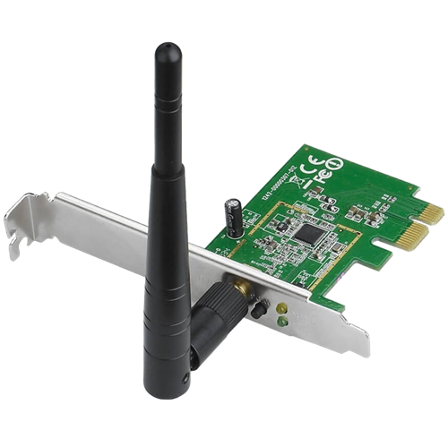
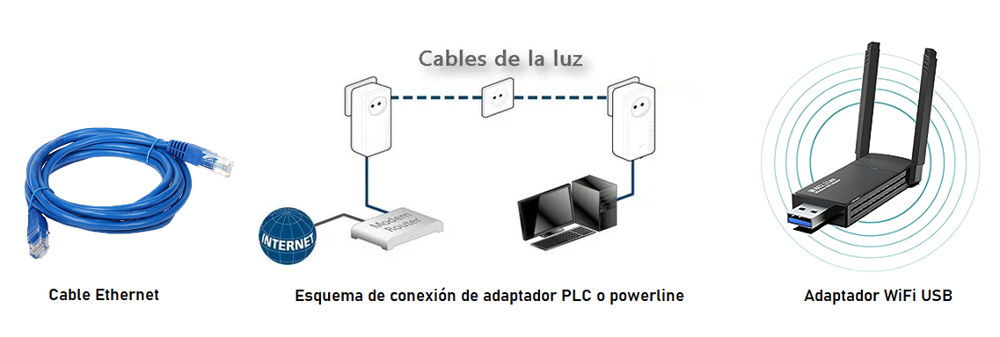
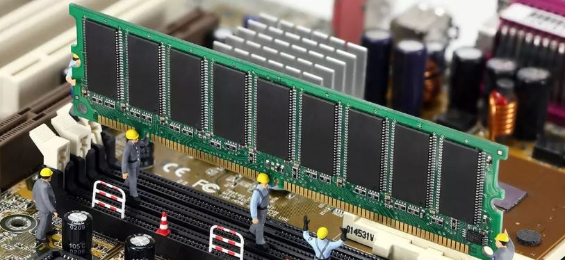
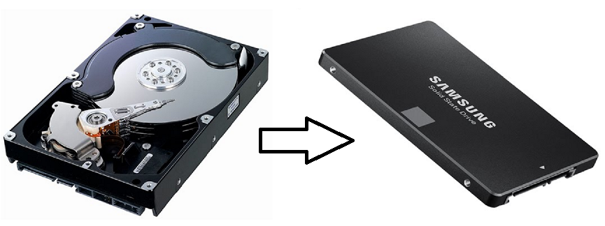
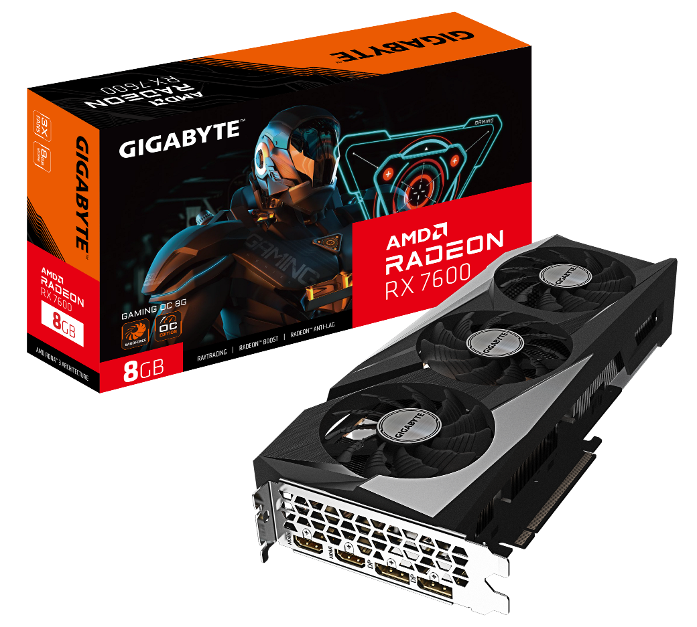
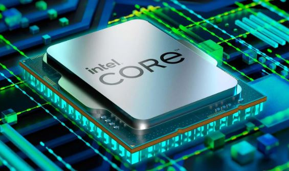
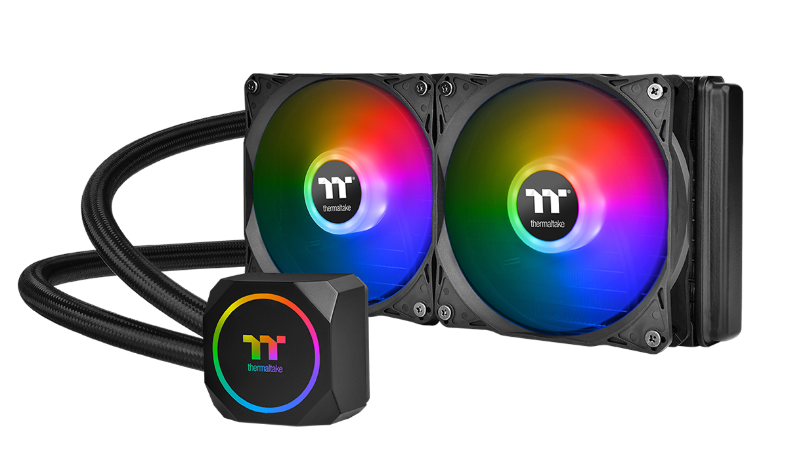
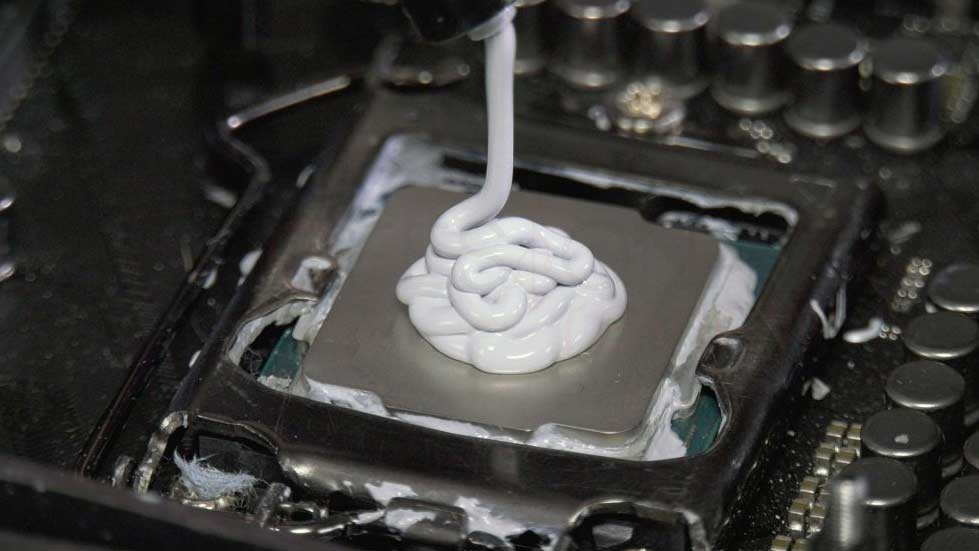
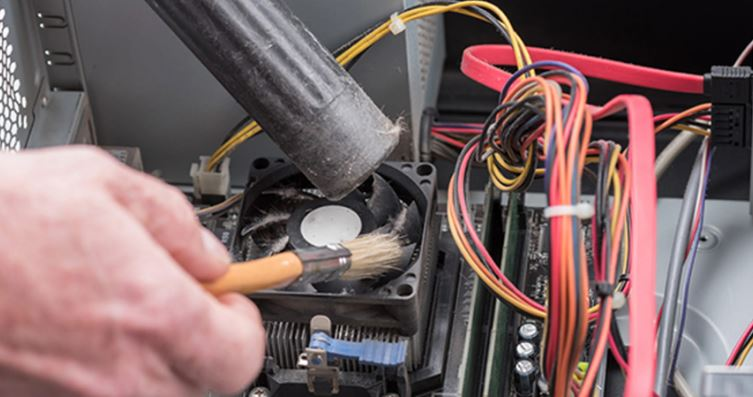

A lo largo de la vida útil de nuestro ordenador pueden aparecer una infinidad de problemas técnicos.¿Cuáles crees que podrían ser las soluciones a los siguientes problemas?
Problema 1. Mi ordenador dispone de puerto RJ45 para conexión a Internet por cable pero el router está demasiado lejos, ¿qué puedo hacer?
Soluciones
Una opción válida para solucionar el problema puede ser instalar una tarjeta de expansión con antena para habilitar la conexión a Internet a través de Wi-Fi. Este enfoque puede ser muy útil si no queremos lidiar con cables y el router está demasiado lejos para una conexión por cable de red (cable Ethernet).

Otras soluciones posibles podrían ser: usar un cable de red más largo o reubicar el PC, usar un adaptador powerline (o adaptador PLC) que utiliza la red eléctrica para transmitir la señal de Internet, utilizar un segundo router cerca de donde vaya a estar ubicado el ordenador (este segundo router se conectará por WiFi al primero y por cable al ordenador) o, por último, usar un adaptador WiFi USB.

Problema 2. Necesito mejorar la velocidad de mi ordenador, ¿qué opciones tengo?
Soluciones
Hay varias opciones que puedes considerar para mejorar la velocidad de tu ordenador de escritorio si hablamos exclusivamente de mejorar el hardware. La elección dependerá de las necesidades específicas y de las limitaciones de tu sistema actual. Algunas opciones serían:
- Agregar más memoria RAM. Esto puede acelerar significativamente el rendimiento del ordenador, especialmente al usar múltiples aplicaciones o realizar tareas que requieren mucha memoria, como edición de video o diseño gráfico.

- Reemplazar el disco duro con un SSD. Si dispones de un disco duro magnético HDD, cambiarlo por una unidad de estado sólido (SSD) es una de las formas más efectivas de mejorar la velocidad de tu sistema. Los SSD son mucho más rápidos que los discos duros convencionales y pueden reducir drásticamente los tiempos de arranque y carga de aplicaciones.

- Comprar una nueva tarjeta gráfica más moderna y potente si usas aplicaciones o juegos que requieren gráficos intensivos.

- Actualizar el procesador. Si tu ordenador admite actualizaciones de procesador, optar por un procesador más rápido y moderno puede aumentar el rendimiento en tareas que dependen del procesador, como renderización, edición de video y juegos.

En cuanto al software, para mejorar el rendimiento de nuestro PC podríamos: liberar espacio en el disco duro eliminando archivos innecesarios o moviendo datos a unidades de almacenamiento externas, desfragmentar el disco duro en el caso de que todavía utilices un disco duro HDD (lo que permite organizar los archivos de manera más eficiente), realizar una limpieza de software y malware (desinstalando programas que ya no necesitas y asegurándote de que no haya malware o virus que estén ralentizando tu sistema), actualizar el sistema operativo y los controladores (para asegurarte de que estás utilizando las versiones más eficientes y compatibles) y optimizar el inicio de los programas (desactivando los programas que se inician automáticamente con el sistema y que no necesitas de inmediato, lo que puede acelerar el tiempo de arranque).
Problema 3. Mi ordenador hace demasiado ruido, ¿cuáles pueden ser las causas? y ¿cómo reduzco el ruido?
Soluciones
El ruido en un ordenador de sobremesa puede ser causado por varios componentes y factores. Aquí tienes algunas posibles causas y consejos para reducir el ruido:
Causas del ruido:
- Ventiladores. Los ventiladores del sistema, incluyendo los del procesador, la tarjeta gráfica y la fuente de alimentación, son una fuente común de ruido. Si están funcionando a altas revoluciones, pueden generar ruido.
- Disco duro. Los discos duros tradicionales pueden emitir ruido cuando están en funcionamiento debido al movimiento mecánico de los componentes internos.
- Fuente de alimentación. Las fuentes de alimentación pueden generar ruido dependiendo de su calidad y diseño.
- Tarjeta gráfica. Algunas tarjetas gráficas, especialmente las más potentes, pueden generar ruido cuando están bajo carga debido a los ventiladores y al enfriamiento requerido.
Cómo reducir el ruido:
- Limpieza y mantenimiento. El interior del ordenador debe estar limpio de polvo y suciedad. El polvo acumulado en los ventiladores y componentes puede hacer que funcionen menos eficientemente y generar más ruido.
- Ventilación. Los ventiladores deben estar funcionando correctamente. Algunas placas base permiten ajustar la velocidad de los ventiladores. Puedes configurarlos para que funcionen a velocidades más bajas cuando no se necesita refrigeración intensa, lo que reducirá el ruido. Además, utilizat ventiladores de calidad o cambiarlos por modelos más silenciosos puede ayudar.
- Usar discos duros de estado sólido (SSD). Si tienes un disco duro mecánico HDD que hace ruido, considera reemplazarlo por un SSD, que no tiene partes móviles y es mucho más silencioso.
- Aislamiento acústico. Se pueden agregar materiales aislantes acústicos dentro de la carcasa del ordenador para reducir la propagación del ruido.
- Fuentes de alimentación y componentes silenciosos. Si el ruido de la fuente de alimentación o la tarjeta gráfica es un problema, considera invertir en componentes de mayor calidad diseñados para ser más silenciosos.
- Ubicación. Coloca tu ordenador en una superficie que no transmita vibraciones y ruidos, como una alfombra o una mesa de madera.
Problema 4. Quiero una mejor refrigeración para mi ordenador, ¿qué opciones tengo?
Soluciones
Para mejorar la refrigeración de tu ordenador de sobremesa y mantener las temperaturas bajo control y aumentar el rendimiento, existen varias opciones:
1. Agregar ventiladores adicionales para mejorar la circulación de aire. Según el diseño de la carcasa, se podrán instalar ventiladores en las partes frontal, trasera, superior y lateral.
2. Usar ventiladores de alta calidad. Considera actualizar los que ya tengas y cambiarlos por modelos de mayor calidad y diseñados para un funcionamiento más silencioso y eficiente. Los ventiladores de alta gama pueden generar menos ruido y mover más aire.
3. Usar refrigeración líquida (AIO). Los sistemas de refrigeración líquida todo en uno (AIO) son una opción más avanzada. Consisten en un radiador, un bloque de agua y una bomba, y son especialmente útiles para enfriar procesadores potentes y tarjetas gráficas de alto rendimiento.

4. Pasta térmica de calidad. Asegúrate de utilizar pasta térmica de alta calidad al montar o reemplazar disipadores de calor. Una buena pasta térmica ayuda a transferir el calor de manera más eficiente entre la superficie del procesador y el disipador.

5. Limpieza y mantenimiento. Mantén tu sistema limpio de polvo y suciedad, ya que la acumulación de polvo puede obstruir los ventiladores y disipadores de calor, afectando el rendimiento de la refrigeración.

Problema 5. ¿Cómo puedo evitar la pérdida de datos si mi ordenador deja de arrancar? ¿Cómo soluciono el problema?
Soluciones
Evitar la pérdida de datos en caso de que el ordenador deje de arrancar y solucionar el problema requiere un enfoque cuidadoso y planificación. Que tu ordenador deje de funcionar de repente puede pasar en cualquier momento, por lo que lo más aconsejable es minimizar el riesgo de pérdida de datos con una actitud preventiva, realizando copias de seguridad regularmente. Además, es importante disponer de algún disco de recuperación del sistema para poder solucionar el problema, que en muchas ocasiones puede ser debido a un mal funcionamiento de alguno de los elementos del hardware, como el disco duro, lo que haría que tuviésemos que cambiarlo y recurrir al disco de recuperación.
Así que esa es la medida más importante que puedes tomar: realizar copias de seguridad de tus datos en dispositivos externos, servicios en la nube o unidades de red y utilizar herramientas de recuperación del sistema.
Problema 6. He comprado una nueva impresora y mi ordenador no la reconoce, ¿qué debo hacer?
Soluciones
Si has comprado una nueva impresora y tu ordenador no la reconoce, hay algunos pasos que puedes seguir para solucionar el problema:
1. Verifica las conexiones físicas. Asegúrate de que la impresora esté correctamente conectada a tu ordenador mediante un cable USB, una conexión Wi-Fi o cualquier otro método que la impresora utilice para conectarse.
2. Instala los controladores (drivers) adecuados. La mayoría de las impresoras requieren controladores específicos para funcionar correctamente con tu sistema operativo. Asegúrate de que los controladores adecuados estén instalados en tu ordenador. Puedes encontrar estos controladores en el sitio web del fabricante de la impresora o en el disco de instalación que viene con la impresora.
3. Actualiza los controladores. Si ya has instalado los controladores, verifica si hay actualizaciones disponibles en el sitio web del fabricante de la impresora. A veces, las actualizaciones de controladores pueden resolver problemas de compatibilidad.
4. Reinicia el ordenador e impresora. Apaga y enciende tanto el ordenador como la impresora. A veces, un reinicio simple puede resolver problemas de reconocimiento.
5. Prueba en otro puerto USB o red Wi-Fi. Si estás utilizando una conexión USB, intenta conectar la impresora a otro puerto USB en tu ordenador. Si estás utilizando una conexión Wi-Fi, asegúrate de que la impresora esté conectada a la misma red que tu ordenador.
6. Desinstala y reinstala la impresora. Si los pasos anteriores no funcionan, desinstala la impresora de tu ordenador y luego vuelve a instalarla. Asegúrate de seguir las instrucciones proporcionadas por el fabricante para la instalación.
En caso de que nada funcione, lo más sensato sería ponerse en contacto con el servicio técnico.